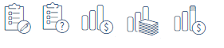
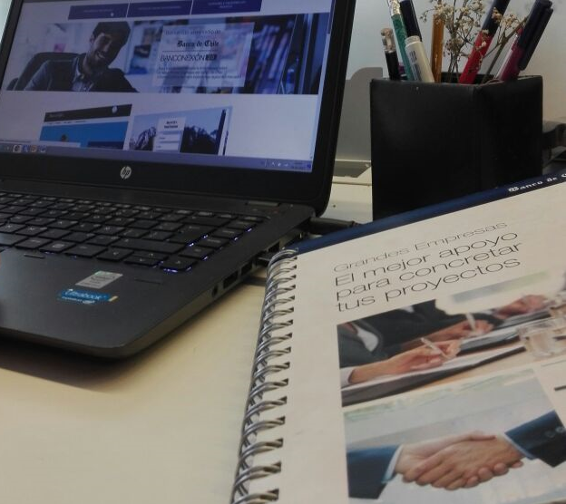
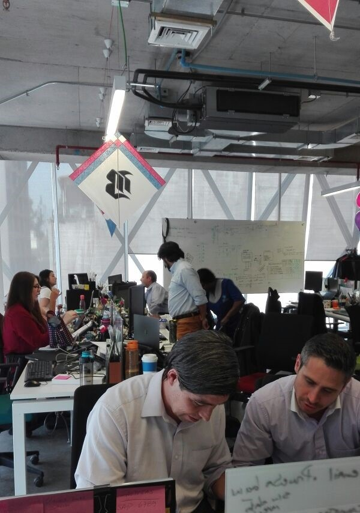
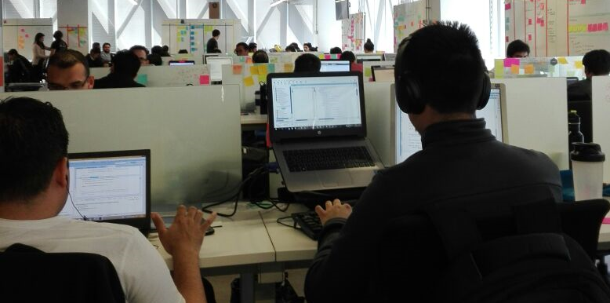
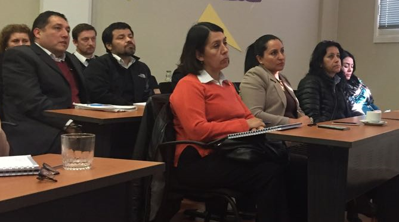

Conoce Nuestros Horarios de Corte
Click
Galería Imágenes
Novedades Banconexión 2.0
El boletín informativo mensual que te ayudará a interiorizarte sobre nuestros avances y novedades.
Portal Interno Banconexión 2.0
En Banconexión 2.0 tenemos la misión de entregarles a nuestros clientes la mejor atención, con soluciones oportunas, rápidas e innovadoras para sus movimientos bancarios, con el propósito de convertirnos en la mejor banca digital del mercado.
Contamos con el mejor equipo, que constantemente se está capacitando para brindarles a nuestros beneficiarios una atención de calidad. Por medio del Minisitio Interno de Banconexión 2.0, los colaboradores podrán interiorizarse sobre los nuevos productos de la plataforma, conocer las respectivas funcionalidades y estar al tanto de todos sus aspectos importantes.

¿Qué encontrarás en el Minisitio?
Dentro de este portal encontrarás todas las características de las funcionalidades asociadas a Banconexión 2.0, explicadas de una manera fácil y didáctica. Además, hallarás manuales de uso, infografías, videos explicativos, contratos y todos los documentos necesarios para que tus clientes y tú puedan operar correctamente en la plataforma. Si deseas obtener estos archivos solo debes seleccionar el recuadro “¿Necesitas un documento?”
¿A quién nos dirigimos?
A todos los colaboradores del Banco de Chile que realicen alguna función asociada a Banconexión 2.0.
¿Cuáles son los nuevos productos de Banconexión 2.0?
Actualmente, Banconexión 2.0 incluye las siguientes funcionalidades: Tarjeta de Crédito, Cuenta, Línea de Crédito, Transferencias, Pagos Masivos, Pago de Cuentas y Servicios, Pago en Otros Sitios, Recaudaciones, Cartas de Instrucción, Ingreso, Página de Inicio, Mi Perfil, Mis Preferencias y Administración.

(Banconexión 2.0.)
Funcionalidades

(Equipo Banconexión 2.0)
Ingreso:
Para operar en Banconexión 2.0, el usuario debe ingresar su RUT y clave. La selección de empresa con la que desea operar —que en el antiguo portal se realizaba digitando su RUT en el Login— ahora se ejecuta con un selector, en la página privada de cada usuario. También se presentan las opciones Olvido de Clave y Solicitud de Clave.
Recaudaciones:
Esta nueva funcionalidad permite a la empresa administrar sus cuentas por cobrar, realizando inscripciones de carteras en forma masiva y dejando disponible las cuentas por cobrar en la misma plataforma para su propia administración y la de sus proveedores o deudores. El cliente puede optar por realizar Recaudaciones Tradicionales (Caja Banco de Chile) o Recaudaciones Electrónicas (PAC y Botón de Pago).
Tarjeta de Crédito:
El cliente dispone de herramientas para pagar su Tarjeta de Crédito, visualizar Saldos y Movimientos, personalizar consultas, descargar datos, aclarar Movimientos y configurar su PinPass.
Línea de Crédito:
En Banconexión 2.0 se disponen herramientas para que el cliente pague las deudas de su Línea de Crédito, personalice sus consultas y descargue datos, como Saldos y Movimientos, Cartola Histórica y Liquidación de Intereses.
Cuenta:
Este espacio incluye las consultas de Saldos y Movimientos, Cartola Histórica, Cartola de Intereses, Liquidación de Interese, Cheques y los Saldos Consolidados. La plataforma le permite al cliente tener una mirada transversal a todas sus cuentas o a un subconjunto de ellas.
Cartas de Instrucción
Esta funcionalidad permite el envío de Cartas de Instrucción, a través de un sistema digital entre clientes y Banco que optimiza la creación, gestión y tracking de los procesos internos.
 (Equipo área Nueva Internet)
(Equipo área Nueva Internet)
Transferencias:
Ahora las transferencias se realizan en tres pasos. Agregar, Inscribir y Consultar. Existe un cuarto opcional que permite liberar los fondos previamente autorizados
Pagos Masivos:
Banconexión 2.0, permite que el cliente envíe Nóminas de Pagos Masivos, ya sea por archivo o por digitación, de forma segura y eficiente. El proceso comienza cuando se agrega una nueva Nómina de pago. Luego ésta se inscribe y posteriormente se autoriza. De manera opcional, se pueden agregar las funciones Liberar Pagos y Pagos Express.
Pago en Otros Sitios:
En esta sección la empresa puede decidir los comercios en donde se visualizará su Botón de Pago y administrar sus acciones, como autorizar, liberar y consultar sobre los diversos Movimientos efectuados.
Pago de Cuentas y Servicios:
Esta herramienta le permite al cliente pagar, enrolar, verificar y consultar Cuentas y Servicios a través de internet y de manera rápida y sencilla.
 (Área Nueva Internet Banco de Chile.)
(Área Nueva Internet Banco de Chile.)
Administración
Esta nueva función le permite al cliente autoadministrar los usuarios de una empresa por internet, sin tener que notificar al banco y a su ejecutivo. Desde ella, el cliente puede buscar, editar, desvincular, autorizar, bloquear/desbloquear y crear nuevos usuarios.
Página de Inicio:
La Página de Inicio de Banconexión 2.0 es un espacio personalizado, simple e innovador, que entrega información de utilidad para el cliente.

(Equipo Banconexión 2.0)
Mi Perfil:
En la sección Mi Perfil, el cliente puede administrar sus datos de contacto —Administrar Datos Personales y Administrar Datos Laborales—, sus claves y sus dispositivos de seguridad —Administrar Datos de Seguridad—. El usuario puede acceder a su perfil, seleccionando la opción Editar Perfil que aparece en la Cabecera.

(Capacitación Banconexión 2.0.)
Mis Preferencias:
Los accesos directos que se visualizan en el Cuerpo de la Página de Inicio son personalizados por el cliente, quien puede definir manualmente las secciones más utilizadas y su respectiva posición en la pantalla.
Cartas de Instrucción:
Esta funcionalidad permite el envío de Cartas de Instrucción, a través de un sistema digital entre clientes y Banco que optimiza la creación, gestión y tracking de los procesos internos.